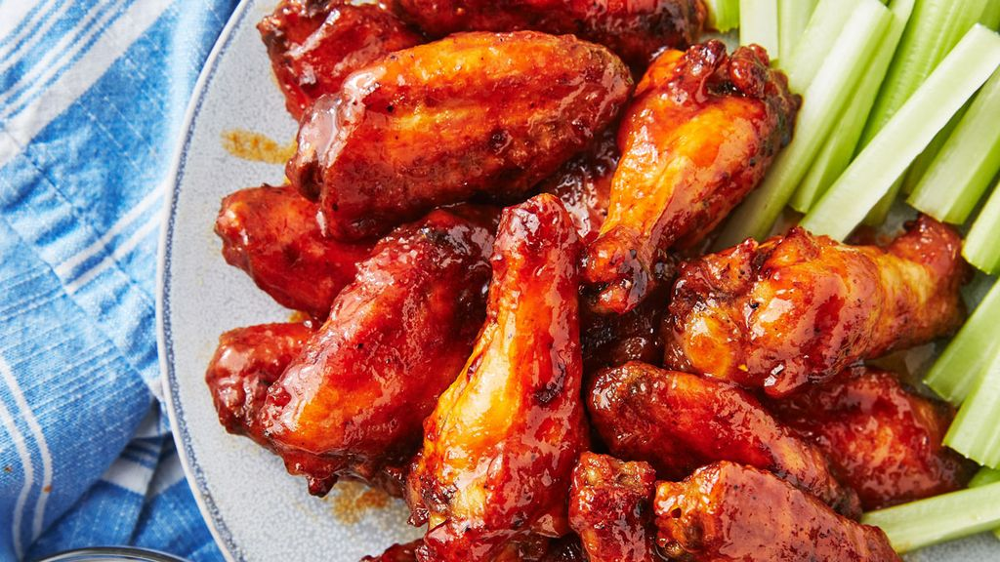

Buffalo Wings Recipe

Description
Buffalo wings, also known as chicken wings, are a popular American bar food that has become a favorite of sports fans and party-goers alike. They consist of deep-fried chicken wings coated in a spicy sauce made from hot sauce and butter.
Ingredients
- Chicken wings (about 2 pounds)
- All-purpose flour
- Salt and pepper
- Oil for frying
- Butter
- Hot sauce (traditionally cayenne pepper-based hot sauce is used, but other types can be substituted if desired)
- Vinegar or lemon juice (to add acidity to the sauce)
Steps
- Preheat your oven to 200°C (400°F).
- In a small bowl mix together flour, salt and pepper.
- Coat chicken wings in this mixture until they are evenly coated.
- Heat oil in a deep frying pan over medium-high heat.
- Fry chicken wings for about 10-12 minutes or until golden brown and cooked through.
- Remove the fried chicken wings from pan using tongs and place them on paper towel-lined plate to remove excess oil.
- Meanwhile, melt butter in a saucepan over low-medium heat.
- Add hot sauce & vinegar/lemon juice into melted butter while stirring constantly.
- Simmer it for about 5 minutes,stirring frequently.
- Place fried chicken wings into large mixing bowl.Pour prepared hot sauce mixture over it.Toss well so that all pieces are coated with even layer of sauce.
- Transfer coated buffalo wings on baking sheet lined with parchment paper.Bake at preheated oven for around 15-20 minutes or until crispy & glaze is set.